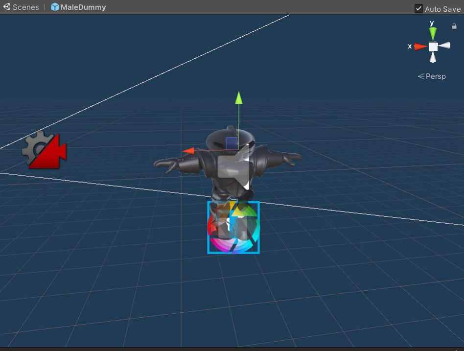
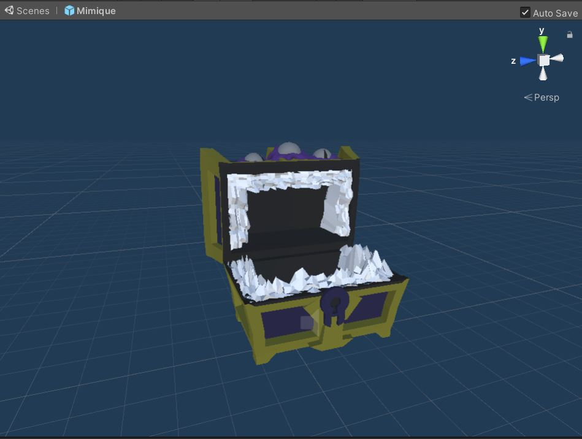

Le Joueur
Chaque modèle 3D importé dans Unity (en format fbx) possède son rendu 3D ainsi que des espaces vides de matériaux ou de couleur que nous remplissons avec des matériaux. De plus, les textures sont incluses automatiquement dans le modèle grâce aux spécificités de Blender qui nous permettent, un précieux gain de temps.

La Mimique
Cet ennemi est particulier, il se camoufle en coffre et ne révélera sa vraie nature que si le joueur essaie de l’ouvrir. Une fois ouvert, il se met à poursuivre le joueur dans l’espoir de le dévorer. Le vaincre octroie au joueur l’objet que le coffre aurait dû contenir.
